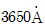
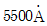
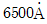
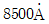
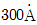
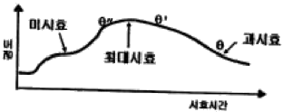

침투비파괴검사기사(구) (2006-09-10 기출문제)
1과목: 침투탐상시험원리
1. 다음 중 침투탐상시험법의 장점이 아닌 것은?
- 원리가 간단하고, 검사가 용이하다.
- 검사의 적용이 비교적 간단하다.
- 적용에 있어서 시편 크기나 모양이 거의 무관하다.
- 비파괴검사에서 구할 수 있는 모드 ㄴ종류의 결함 검출이 가능하다.
(정답률: 알수없음)

2. 침투탐상시험에서 결함지시모양을 기록하는 방법이 아닌 것은?
- 사진에 의한 기록
- 접착 테이프에 의한 전시
- 각인에 의한 기록
- 스케치에 의한 기록
(정답률: 알수없음)
3. 다음 중 단조품을 후유화제법으로 침투탐상시험할 때 침투시간을 가장 많이 주어야 하는 재질은? (단, 온도 범위는 16~32℃이며, 기타 조건은 같다고 가정한다.)
- 알루미늄
- 마그네슘
- 스테인리스 스틸
- 티타늄
(정답률: 알수없음)
4. 속건식 현상제에 사용되는 백색 분말의 재료로 사용되지 않는 것은?
- 산화마그네슘(MgO)
- 산화칼슘(CaO)
- 산화티탄(TiO2)
- 산화알루미늄(Al2O3)
(정답률: 알수없음)
5. 침투탐상시험시 용접 크레이터(Crater) 균열은 통상적으로 어떤 모양의 지시로 나타나는가?
- 방사형 지시
- 미세한 선형지시
- 작고 가는 균열
- 단속적인 거짓지시
(정답률: 알수없음)
6. 침투탐상시험시 세라믹의 기공에 의한 불연속지시는 금속의 기공에 의한 불연속 지시와 비교하여 어떻게 나타나겠는가? (단, 다른 검사 조건은 모두 동일)
- 금속의 기공에 의한 지시보다 더욱 선명하게 나타난다.
- 재료에 무관하게 금속의 기공에 의한 지시와 거의 동일하게 나타난다.
- 금속의 기공에 의한 지시보다 훨씬 흐리게 나타난다.
- 균열의 지시모양처럼 선형으로 예리하게 나타난다.
(정답률: 알수없음)
7. 방사선투과시험(RT)과 초음파탐상시험(UT)을 비교 설명한 것이다. 틀린 것은?
- 일반적으로 RT는 투과법을, UT는 펄스 반사법을 이용한다.
- RT는 건전부와 결함부위의 투과선량이 같고, UT는 건전부에서는 반사파가 생기지 않지만 결함부위에서는 반사파가 생긴다.
- RT는 방사선의 진행 방향에 평등한 방향의 결함 검출이 쉽고, UT는 초음파의 진행 방향에 수직인 방향의 결함 검출이 쉽다.
- 내부 터짐(crack)을 검출하는 데는 UT가 RT보다 성능이 우수하다.
(정답률: 알수없음)
8. 침투탐상시험시 사용하는 자외선조사등의 필터를 통과하는 자외선의 파장은?




(정답률: 알수없음)
9. 단속적으로 용접이 된 단조겹침(Partially Welded Forging Lap)에서 나타날 수 있는 지시의 형태는?
- 지시가 나타나지 않는다.
- 매우 가늘고 연속된 선으로 나타난다.
- 넓고 연속적인 선으로 나타난다.
- 불연속으로 단속적인 선으로 나타난다.
(정답률: 알수없음)
10. 부적절한 전처리로 인해 시험체 표면에 산성을 띠는 불순물이 존재하면 어떠한 현상이 발생되는가?
- 형광휘도가 상승한다.
- 침투제 성능이 저하된다.
- 결함 판독이 불가능하다.
- 세척 능력이 떨어진다.
(정답률: 알수없음)
11. 침투탐상시험에 사용되는 침투액의 특성으로 잘못된 것은?
- 색채콘트라스트가 높아야 한다.
- 인화점이 낮아야 한다.
- 중성이어야 한다.
- 형광휘도가 높아야 한다.
(정답률: 알수없음)
12. 다음 중 전원이 없는 곳에서 이용할 수 있는 비파괴검사법의 올바른 조합은?
- X선을 이용한 방사선 투과검사, 수세성 형광침투탐상검사
- γ선을 이용한 방사선 투과검사, 용제제거성 염색침투탐상검사
- 코일법을 이용한 자분탐상검사, 관통법을 이용한 와전류탐상검사
- 수침법을 이용한 초음파탐상검사, 전기저항을 이용한 응력측정
(정답률: 알수없음)
13. 다음 결함 중 사용 중 결함인 것은?
- 슬래그 개재물
- 응력 부식 균열
- 겹침
- 기공
(정답률: 알수없음)
14. 다른 침투탐상시험과 비교하여 용제제거성 염색침투탐상시험의 주된 단점은?
- 탐상강도가 낮은 것이 단절이다.
- 전원을 필요로 하는 단점이 있다.
- 규정된 거치식 장비를 구비해야 하는 단점이 있다.
- 일광 또는 백열등 하에서 시험할 수 없는 단점이 있다.
(정답률: 알수없음)
15. 침투탐상시험에서 습식현상제의 적용 후 이에 대한 건조 방법으로서 가장 우수한 방법은?
- 흡수가 잘되는 흡수지로 표면을 살며시 문질러서 현상제를 빨아낸다.
- 실내 온도 근처에서 천천히 건조되도록 방치해 둔다.
- 실내 온도에서 공기를 불어 내어 급속히 건조시킨다.
- 헤어드라이나 열풍기 등으로 열풍을 순환시켜 건조시킨다.
(정답률: 알수없음)
16. 알루미늄 제품의 표면검사를 목적으로 하는 비파괴시험법으로 조합된 것은?
- 자분탐상시험, 와전류탐상시험, 음향방출시험
- 와전휴탐상시험, 침투탐상시험, 자기변형음향방출시험
- 침투탐상시험, 육안시험, 와전류탐상시험
- 육안시험, 자분탐상시험, 전자초음파시험
(정답률: 알수없음)
17. 침투액의 성질은 점성, 표면장력, 적심성의 3가지 변수에 의해 침투인자가 결정된다. 점성의 변수에 영향을 받는 동적침투인자(KPP)를 나타내는 식은? (단, γ : 표면장력, θ : 접촉각, η : 점성을 나타낸다.)
- KPP = γㆍη/cosθ
- KPP = γㆍcosθ/η
- KPP = ηㆍcosθ/γ
- KPP = γㆍηㆍcosθ
(정답률: 알수없음)
18. 다음 중 비파괴시험 결과의 신뢰성을 보증하기 위한 대책과 거리가 먼 것은?
- 자동화 시험의 수동화 유도
- 자격제 시행에 의한 시험인력관리
- 정기적인 기기 성능ㆍ관리
- 정량화된 결함 평가 기술 개발
(정답률: 알수없음)
19. 모세관현상에 의해 튜브내에 있는 액체는 자발적으로 벽을 타고 올라 간다. 다음 중 이러한 현상과 유사한 내용은?
- 액체끼리의 혼합
- 균열속으로의 액체 침투
- 액체의 증발 현상
- 액체의 화학적 변화
(정답률: 알수없음)
20. 사용중인 침투제의 성능점검을 1차적으로 간단히 할 수 있는 시험방법은?
- 침투액의 비중을 측정하여 점검한다.
- 침투액의 점성을 측정하여 점검한다.
- 대비시험편을 사용하여 비교시험한다.
- 메니커스(Menicus) 시험으로 점검한다.
(정답률: 알수없음)
2과목: 침투탐상검사
21. 형광침투탐상시험의 경우 결함지시모양의 관찰에 사용되는 자외선등의 입사파장은 A라 하고, 형광침투액과 자외선등이 반응하여 발생시키는 형광의 파장을 B라고 할 때 A와 B의 파장범위로 옳은 것은?
- A : 320-400nm, B : 365-390nm
- A : 350-400nm, B : 470-580nm
- A : 630-740nm, B : 350-400nm
- A : 570-820nm, B : 450-570nm
(정답률: 알수없음)
22. 용제제거성 침투액에 의한 탐상시험에서 결함탐상이 잘 안되는 것을 피하기 위해 다음 중에서 가장 주의해야 할 사항은?
- 유화제의 과량 사용을 피한다.
- 세척제의 과량 사용을 피한다.
- 침투시간이 너무 길지 않았나 확인한다.
- 과잉침투액의 세척이 잘되었는지 확인한다.
(정답률: 알수없음)
23. 후유화성 형광침투액의 피로에 대한 점검이 필요할 때 실시하는 점검 항목이 아닌 것은?
- 형광휘도
- 감도
- 수세성
- 수분함유량
(정답률: 알수없음)
24. 용제제거성 형광침투탐상시험에 대한 설명 틀린 것은?
- 용제제거성 염색침투탐상시험보다 검출 감도가 높다.
- 시험 장소는 어두워야 하며 자외선조사등이 필요하다.
- 대형 부품, 구조물의 전체 탐상에 적합하다.
- 수도시설이 불필요하다.
(정답률: 알수없음)
25. 다음 중 침투탐상시험하기 가장 용이한 표면 거칠기는?
- 0.8S
- 5.0S
- 6.3S
- 7.0S
(정답률: 알수없음)
26. 침투제가 물에 오염되었을 때 물에 대한 침투제의 감도를 측정하는 방법은?
- 물방울 통과 시험(Water drop-though test)
- 액체 비중계 시험(Hydrometer test)
- 사진 형광계 시험(Photofluorometer test)
- 수분함량 시험(Water content test)
(정답률: 알수없음)
27. 다음 중 침투탐상시험의 유화처리에 대한 설명으로 적절치 않은 것은?
- 시험면에 침투처리하고 소정의 침투시간이 경과한 후 수세성을 주기 위해 유화제를 도포처리 하는 과정이다.
- 시험면에 유화제를 적용한 후에는 유화제와 침투제가 잘 혼합되도록 흔들어 주거나 휘저어 섞어 준다.
- 유화처리 방법은 시험품을 유화제 중에 침적하던가 시험면에 잘 뿌려주는 방법을 선택한다.
- 유화처리란 세척처리를 할 때 안정된 유화현상을 촉진, 물로 세척하기 용이하도록 하는 작업이다.
(정답률: 알수없음)
28. 침투탐상시험에 사용되는 세척제가 일반적으로 갖추어야 할 성질로 틀린 것은?
- 휘발성이 적당하여야 한다.
- 독성이 적어야 한다.
- 냄새가 적고 인화점이 낮아야 한다.
- 중성으로 부식성이 없어야 한다.
(정답률: 알수없음)
29. 현상제가 결함부에만 부착되어 시간이 경과하여도 결함지시모양의 확대 및 번짐이 적고, 비교적 실제 결함 형태나 크기에 충실한 결함지시모양을 얻을 수 있는 현상법은?
- 건식현상법
- 속건식현상법
- 습식현상법
- 무현상법
(정답률: 알수없음)
30. 복잡한 형상의 주조품 검사시, 얇은 쪽에 연결되는 부위의 거의 중앙선상에 선형지시가 나타났다면 예상되는 결함은?
- 겹침
- 수축공
- 기공
- 고온균열
(정답률: 알수없음)
31. 유화제의 수세성 시험은 강재 시험편과 더불어 사용하던 유화제와 새 유화제 및 새 침투액을 혼합한 2가지 혼합물을 사용하여 시험한다. 이 중 하나는 새 유화제와 새 침투제를 50%씩 섞어 시험하며, 또 다른 방법은 사용하던 유화제와 새 침투제를 섞어 시험하는데 이 때의 혼합 비율로 가장 적합한 것은?
- 사용하던 유화제25% : 새로운 침투제 75%
- 사용하던 유화제50% : 새로운 침투제 50%
- 사용하던 유화제75% : 새로운 침투제 25%
- 사용하던 유화제50% : 새로운 침투제 50%
(정답률: 알수없음)
32. 다양한 재질, 여러 종류의 불연속은 서로 다른 침투시간이 요구된다. 일반적으로 넓고 얕은 불연속에 요구되는 침투 시간과 비교했을 때 미세한 균열에 요구되는 침투시간은?
- 더 짧게 한다.
- 더 길게 한다.
- 동일하게 한다.
- 침투시간을 같으나 현상시간을 늘린다.
(정답률: 알수없음)
33. 사용 중인 현상제에 대한 성능시험을 시행하여 부착상태의 불균일이 생겨 결함지시모양의 식별이 곤란하고 현상성능의 저하가 인정되었을 경우의 처리 방법으로 옳은 것은?
- 폐기시킨다.
- 새로운 현상제를 25% 첨가하여 재사용한다.
- 새로운 현상제를 50% 첨가하여 재사용한다.
- 새로운 현상제를 95% 첨가하여 재사용한다.
(정답률: 알수없음)
34. 침투탐상시험의 관찰 및 판정에 대한 설명이 잘못된 것은?
- 습식현상제를 적용한 경우의 관찰은 현상제가 완전히 건조되었을 때 시작한다.
- 현상제가 너무 두껍게 적용되었을 때에는 현상제를 제거하고 다시 현상제를 적용한다.
- 확실한 판정을 위해 시험 부위를 깨끗하게 닦아낸 후 밝은 조명하에서 확대경을 사용, 육안검사로 확인한다.
- 긁힘, 과잉침투제 등으로 인한 의사모양 유무는 일차 판독자의 경험에 의해 분류하고, 적절한 조명하에서 다시 관찰한다.
(정답률: 알수없음)
35. 다음 중 침투탐상시험 방법으로 검출이 곤란한 불연속은?
- 단조 겹침
- 크레이터 균열
- 이음매(Seams)
- 비금속 개재물 혼입
(정답률: 알수없음)
36. 다음 침투탐상시험법 중 일반적으로 검사가 가장 빠르고 또 세척처리도 가장 간단한 방법은?
- 용제법에 의한 염색침투탐상시험
- 수세법에 의한 염색침투탐상시험
- 용제법에 의한 형광침투탐상시험
- 수세법에 의한 형광침투탐상시험
(정답률: 알수없음)
37. 다공질 재료나 세라믹 제품의 표면에 극미립자 분말을 현탁시킨 액체를 적용하면 액체는 검사체 전체 표면에 흡입되지만 표면 균열 개구부에서는 건전부에 비해, 보다 많은 미립자 분말이 잔류, 축적된다. 이런 축적된 미립자에 의해 형성된 지시모양으로 결함의 존재 유무를 알 수 있는 침투탐상시험법은?
- 역형광법
- 하전입자법
- 여과입자법
- 기체 방사성 동위원소법
(정답률: 알수없음)
38. 다음 불연속 중 침투탐상검사로 찾아낼 수 없는 것은?
- 표면 기공
- 표면 균열
- 내부 개재물
- 단조 파열
(정답률: 알수없음)
39. 자외선을 방출하는 자외선등에 부착된 필터가 제거해야 하는 빛의 종류는?
- 자연광선
- 침투제에 의한 형광
- 등에서 발산하는 가시광선
- 등에서 발산하는

이상의 파장을 가진 광선
(정답률: 알수없음)
40. 수세성 형광침투탐상시험에 대한 설명이 잘못된 것은?
- 넓은 면적을 단 한번의 조작으로 탐상하기 쉽다.
- 열쇠구멍이나 나사부분도 어느 정도 시험 가능하다.
- 수분이 있으면 침투액의 성능이 현저히 저하된다.
- 비교적 얕은 결함의 탐상도 용이하다.
(정답률: 알수없음)
3과목: 침투탐상관련규격
41. 침투탐상 시험방법 및 침투지시모양의 분류(KS B 0816)에 규정된 침투액 제거를 위한 세척처리 내용으로 바르게 설명한 것은?
- 형광 침투액의 세척시 자외선을 쪼여 세척의 정밀도를 관찰할 필요는 없다.
- 스프레이 노즐을 사용할 때 특별한 규정이 없는 한 수압은 275kPa 이하로 한다.
- 후유화성 침투액은 유화제로 세척한다.
- 일반적으로 용제 제거성 침투액 적용시 세척액에 시험품을 침지시켜 세척한다.
(정답률: 알수없음)
42. 보일러 및 압력용기에 대한 침투탐상검사(ASME Sec.V Art.6) 규정에 따른 현상제의 적용에 관한 설명 중 틀린 것은?
- 건식 현상제는 부드러운 솔 등으로 건조된 시험 표면에 적용하여야 한다.
- 수성 현상제는 건조된 또는 습한 표면 모두에 적용할 수 있다.
- 수성 현상제 사용시 검사체 표면이 125°F(52℃) 이상 올라가지 않으면 온풍으로 건조시간을 줄일 수 있다.
- 비수성 현상제는 습한 표면에만 사용되어야 한다.
(정답률: 알수없음)
43. 침투탐상 시험방법 및 침투지시모양의 분류(KS B 0816)에서 규정한 표준 침투시간이 5분이 아닌 시험체의 형태는?
- 등 용접부
- 마그네슘 압출품
- 알루미늄 주조품
- 티타늄 용접부
(정답률: 알수없음)
44. 보일러 및 압력용기에 대한 침투탐상검사(ASME Sec.V Art.6) 규정에서 현상에 대한 설명으로 맞는 것은?
- 염색침투제의 경우는 건식현상제만을 사용한다.
- 염색침투제의 경우는 습식현상제만을 사용한다.
- 형광침투제의 경우는 습식현상제만을 사용한다.
- 형광침투제의 경우는 건식현상제만을 사용한다.
(정답률: 알수없음)
45. 침투탐상 시험방법 및 침투지시모양의 분류(KS B 0816)에 따른 현상방법의 분류 기호가 바르게 표시된 것은?
- 수용성 현상제를 사용하는 방법 : W
- 수현탁성 현상제를 사용하는 방법 : A
- 특수한 현상제를 사용하는 방법 : E
- 현상제를 사용하지 않는 방법 : S
(정답률: 알수없음)
46. 침투탐상 시험방법 및 침투지시모양의 분류(KS B 0816)에 따른 시험기록의 작성시 규정된 기재 사항이 아닌 것은?
- 침투액, 유화제, 세척액 및 현상제의 명칭
- 시험 연월일
- 시험체의 품명
- 시험 결과의 합부 판정 및 결합등금
(정답률: 알수없음)
47. 침투탐상 시험방법 및 침투지시모양의 분류(KS B 0816)에서 건조처리에 대한 내용으로 틀린 것은?
- 건조장치는 원칙적으로 소정의 온도에서 열풍으로 건조시킬 수 있는 것으로 한다.
- 건식 현상제를 사용할 때는 현상처리 전에 건조처리를 한다.
- 세척액으로 제거한 경우는 자연건조하거나 또는 마른 헝겊 혹은 종이수건으로 닦아낸다.
- 세척액으로 제거한 경우에는 가열건조를 하는 것이 가장 이상적인 건조처리 방법이다.
(정답률: 알수없음)
48. 항공 우주용 기기의 침투탐상검사 방법(KS W 0914)에 의하여 사용중인 형광침투제의 형광휘도 시험방법으로 옳은 것은?
- 사용 중인 것과 사용하지 않은 것의 휘도를 비교하여 90% 미만일 때에는 불만족한 것으로 한다.
- 사용 중인 것과 사용하지 않은 것의 휘도를 비교하여 70% 미만일 때에는 불만족한 것으로 한다.
- 200Lx의 전등을 비추어 투명하지 않으면 불합격으로 한다.
- 200Lx 이상의 전등을 비추어 청록색이 나타나지 않으면 불합격으로 한다.
(정답률: 알수없음)
49. 주강품-침투탐상검사(KS D ISO 4987)의 규정 설명으로서 주강에 대한 특정 요구사항으로 잘못된 것은?
- 적용 제품의 할로겐과 유황 성분이 1%미만이어야 한다.
- 적용 온도는 10~50℃ 사이이어야 한다.
- 건조는 250kPa 이하의 압력과 50℃ 이하의 깨끗한 공기여야 한다.
- 현상시간은 일반적으로 15~30분 사이로 한다.
(정답률: 알수없음)
50. 보일러 및 압력용기에 대한 침투탐상검사(ASME Sec.V Art.6)에서 오염 관리에 관한 설명으로 틀린 것은?
- 황함유량 분석을 위하여 가열할 경우 발생된 증가는 특별히 제거할 필요는 없다.
- 티타늄에 사용되는 모든 침투 용액은 불순물 함유량에 대한 증명서르르 확보해야 한다.
- 니켈합금을 시험할 경우 모든 탐상제는 황함유량 분석을 실시해야 한다.
- 불순물 관리에 필요한 증명서에는 침투제 제조자의 제조번호 및 본 규격의 시험 결과를 포함하여야 한다.
(정답률: 알수없음)
51. 보일러 및 압력용기에 대한 침투탐상검사(ASME Sec.V Art.6)에 의한 여분의 수세성 침투액은 물분무로 제거한다. 이 때 사용되는 세척수의 압력 및 온도 규정은?
- 수압은 50psi를 초과할 수 없고, 물 온도는 110°F를 초과할 수 없다.
- 수압은 60psi를 초과할 수 없고, 물 온도는 150°F를 초과할 수 없다.
- 수압은 50psi를 초과할 수 없고, 물 온도는 150°F를 초과할 수 없다.
- 수압은 40psi를 초과할 수 없고, 물 온도는 110°F를 초과할 수 없다.
(정답률: 알수없음)
52. 항공 우주용 기기의 침투탐상검사 방법(KS W 0914)에서 규정하는 침투액계의 타입, 방법, 강도의 연결이 틀린 것은?
- 타입 Ⅱ : 염색침투액계통
- 방법 A : 수세성 침투액계통을 사용하는 방법
- 강도레벨 1 : 초고강도
- 방법 B : 후유화성 침투액(친유성) 계통을 사용하는 방법
(정답률: 알수없음)
53. 보일러 및 압력용기에 대한 침투탐상검사(ASME Sec.V Art.24 SE-165)에서 염색침투지시의 관찰은 검사 장소가 최소 얼마 이상인 조도가 필요한 것으로 규정하고 있는가?
- 250룩스
- 500룩스
- 750룩스
- 1,000룩스
(정답률: 알수없음)
54. 침투탐상 시험방법 및 침투지시모양의 분류(KS B 0816)에서 A형 대비시험편 제작시의 규정된 가열온도는?
- 판의 한 면 중앙부를 분젠 버너로 230~330℃로 가열하여, 가열한 면의 반대 면에 흐르는 물을 뿌려 급랭시켜 갈라지게 한다. 마찬가지로 가열한 면도 갈라지게 한 후 중앙부에 흠을 기계가공한다.
- 판의 한 면 중앙부를 분젠 버너로 520~530℃로 가열하여, 가열한 면의 반대 면에 흐르는 물을 뿌려 급랭시켜 갈라지게 한다. 마찬가지로 가열한 면도 갈라지게 한 후 중앙부에 흠을 기계가공한다.
- 판의 한 면 중앙부를 분젠 버너로 430~500℃로 가열하여, 가열한 면에 흐르는 물을 뿌려 급랭시켜 갈라지게 한다. 마찬가지로 반대면도 갈라지게 한 후 중앙부에 흠을 기계가공한다.
- 판의 한 면 중앙부를 분젠 버너로 520~530℃로 가열하여, 가열한 면에 흐르는 물을 뿌려 급랭시켜 갈라지게 한다. 마찬가지로 반대면도 갈라지게 한 후 중앙부에 흠을 기계가공한다.
(정답률: 알수없음)
55. 비파괴검사-침투탐상검사-일반원리(KS B ISO 3452)에서 규정한 검사 및 판독에 대한 설명으로 올바른 것은?
- 시험 표면의 검사시 염색 침투액을 사용하는 경우 조도는 500룩스 이상의 조명이어야 한다.
- 시험 표면의 검사시 형광 침투액을 사용하는 경우 검사 전 눈이 주위의 어두움에 익숙하도록 최소 1분간 기다려야 한다.
- 의심스럽거나 확실하지 않은 지시가 있는 구역은 실제 불연속인지 확인하기 위하여 또 다른 탐상제로 재시험하여야 한다.
- 의심스럽거나 확실하지 않은 지시가 있는 구역은 실제 불연속인지 확인하기 위하여 동일한 탐상제를 이용하여 다른 세척 공정으로 재시험하여야 한다.
(정답률: 알수없음)
56. 컴퓨터 시스템이 실제 주기억장치 용량보다 몇 배 이상의 데이터를 저장할 수 있게 하는 기억장치 관리 방법은?
- 전하 결합소자
- 가상기억장치
- 레이저 기억 시스템
- 자기버블기억장치
(정답률: 알수없음)
57. 다음 중 컴퓨터 정보통신망의 형태가 아닌 것은?
- Star형
- Tree형
- ISDN형
- Ring형
(정답률: 알수없음)
58. 다음 중 컴퓨터 해킹방지에 대한 예방책으로 옳지 않은 것은?
- 방화벽을 구축한다.
- 보안망 체계를 정비한다.
- 패스워드 파일을 공유한다.
- 정기적인 보안 검사를 실시한다.
(정답률: 알수없음)
59. 다음 중 정보를 검색하는 엔진에 속하지 않는 것은?
- 라이코스
- 네이버
- 엠파스
- 네스케이프
(정답률: 알수없음)
60. 인터넷에서 파일을 전송하기 위한 서비스로서 서버 컴퓨터로 파일을 전송하거나, 서버 컴퓨터의 파일을 내 컴퓨터로 받아오기 위한 것을 무엇이라 하는가?
- Telnet
- Archie
- FTP
- HTTP
(정답률: 알수없음)
4과목: 금속재료학
61. 0.8%C의 공석강을 마퀜칭 처리하였을 경우 나타나는 조직은?
- 투루스타이트(Troostite)
- 베이나이트(Bainite)
- 레데뷰라이트(Ledeburite)
- 마텐자이트(Martensite)
(정답률: 알수없음)
62. 구상 흑연 주철의 구상화 처리시 페딩(fading)현상을 방지하기 위한 조치방법으로 옳은 것은?
- Mg 처리 용탕의 방치시간을 짧게 한다.
- 미량의 Mg 으로도 구상화에는 문제가 없다.
- 불순물이 많은 용탕에서는 잔류 Mg 량을 적게 한다.
- Mg 처리 용탕을 주형에 주입되기 전 시간을 되도록 오래 유지한다.
(정답률: 알수없음)
63. 오스테나이트계 스테인리스강의 입계부식 방지 대책으로 옳은 것은?
- Cr 탄화물을 100~200℃로 가열하여 오스테나이트 기지에 용제화처리 후 서냉한다.
- 탄소량을 0.1% 이상 높게 유지한다.
- Cr 탄화물의 입계석출을 억제시키기 위하여 0.2% 이상의 P를 첨가한다.
- Ti, Nb의 안정화 원소를 첨가하여 안정화(Stabillzation) 시킨다.
(정답률: 알수없음)
64. 강의 경화능(hardenability) 시험법으로 옳은 것은?
- 조미니시험
- 초음파탐상시험
- 설퍼프린트시험
- 자분탐상시험
(정답률: 알수없음)
65. 불꽃시험 중 유선의 관찰대상이 아닌 것은?
- 색깔
- 깊이
- 밝기
- 비중
(정답률: 알수없음)
66. 강의 담금질에 따른 용적변화가 가장 큰 조직은?
- 마텐자이트
- 펄라이트
- 오스테나이트
- 페라이트
(정답률: 알수없음)
67. Y-합금에 대한 설명으로 옳은 것은?
- Al-Zn 합금에 소량의 Mg 과 Mn을 첨가한 내열성 합금이다.
- Al-Cu 합금에 소량의 Mg 과 Ni을 첨가한 내열성 합금이다.
- Al-Si 합금에 소량의 Mg 과 Pb을 첨가한 내열성 합금이다.
- Al-Fe 합금에 소량의 Mg 과 Sn을 첨가한 내열성 합금이다.
(정답률: 알수없음)
68. 다음 중 노말라이징(normalizing)의 목적으로 틀린 것은?
- 내부 응력 제거
- 결정립 미세화
- 취성 증대
- 주조 및 과열조직의 개선
(정답률: 알수없음)
69. 주철은 현미경 조직에서 탄소의 분포상태에 따라 분류하게 된다. 이 때 현미경 조직으로 관찰될 수 없는 조직은?
- 백주철(white cast Iron)
- 회주철(gray cast Iron)
- 반주철(mottled cast Iron)
- 흑주철(black cast Iron)
(정답률: 알수없음)
70. 티타늄의 기계적 성질로 틀린 것은?
- 불순물에 의한 영향이 크다.
- 300℃ 근방에서 강도저하가 있다.
- 소성변형에 대한 제약을 받지 않는다.
- 전신재(展柛材)에서 집합조직에 따라 이방성(異方性)이 나타난다.
(정답률: 알수없음)
71. 모넬 메탈(Monel metal)을 설명한 것 중 옳은 것은?
- Ni에 Al을 첨가하여 주조성을 높인 합금이다.
- Ni(60-70%)에 Cu를 첨가하여 내식성, 내마모성을 향상시킨 합금이다.
- R-monel은 소량의 Si를 넣어 강도를 향상시키고 절삭성을 개선한 합금이다.
- 일명 백동이라 하며 가공성과 절삭성을 개선한 합금이다.
(정답률: 알수없음)
72. 실루민(Silumin)합금에 대한 설명으로 옳지 않은 것은?
- Al-Si계 합금으로서 규소가 약 10~14% 정도 함유되어 있다.
- 시효경화성으로 열처리 효과가 크다.
- 극소량(0.02~0.1%)의 Na, Sb 등을 첨가하면 조직이 미세하게 된다.
- 계량처리 때의 Na량은 Mg%가 많을수록 적게, Si%가 높을수록 많게 한다.
(정답률: 알수없음)
73. WC 분말과 Co 분말을 합축성형하여 약 1,400℃로 소결시키면 매우 단단한 금속이 되어 바이트와 같은 공구에 이용되는 금속은?
- 초경합금
- 고속도강
- 화이트메탈
- 일렉트론합금
(정답률: 알수없음)
74. 다음 설명 중 틀린 것은?
- 슬립면은 전위가 이동하는 면으로 원자밀도가 가장 조밀한 면이다.
- 슬립방향은 전위가 이동하는 방향으로 원자밀도가 가장 조밀한 방향이다.
- 슬립계(slip system)란 슬립면과 슬립방향의 조합이다.
- 면심입방정의 슬립계의 수는 48개이다.
(정답률: 알수없음)
75. 철강에 있어서 열간취성(hot shortness)의 원인이 되는 원소는?
- 탄소
- 규소
- 황
- 망간
(정답률: 알수없음)
76. 금속재료 경도시험 방법 중 압입에 의한 것이 아닌 것은?
- 쇼어경도 시험방법
- 비커스경도 시험방법
- 로크웰경도 시험방법
- 브리넬경도 시험방법
(정답률: 알수없음)
77. Fe-C 상태도에서 0.6%C 인 탄소강의 경도를 계산하면 얼마인가? (단, ferrite의 HB는 90, pearlite의 HB 는 200이다.)
- 162.5
- 172.5
- 182.5
- 192.5
(정답률: 알수없음)
78. 그림은 Al-4%Cu 합금의 시효시간에 따른 경도변화를 나타내고 있다. 다음 설명 중 틀린 것은?

- θ°상은 기지와 정합계면을 이루고 있다.
- θ상은 평형상으로 기지와 부정합계면을 이루고 있다.
- 미시효 조건에서는 전위기 석출물을 자르고 이동할 수 있다.
- θ상이 석출한 조건에서는 전위가 석출물을 자르고 지나갈 수 있다.
(정답률: 알수없음)
79. Al 합금의 열처리에서 사용되는 Te 처리란?
- 담금질한 후 인공시효
- 담금질한 후 뜨임
- 담금질한 후 노말라이징
- 담금질한 후 풀림
(정답률: 알수없음)
80. 철과 강의 5대 주요 불순 원소로 옳은 것은?
- C, Cr, Mn, S, P
- C, Si, Ni, S, P
- C, Si, Mn, S, P
- C, Si, Mn, Cu, P
(정답률: 알수없음)
5과목: 용접일반
81. 피복 금속 아크 용접에서 정극성에 관한 설명으로 옳은 것은?
- 용접봉의 용융이 늦고 모재의 용입이 깊어진다.
- 용접봉 용융 속도가 빠르고 모재의 용입이 얕아진다.
- 용접봉의 용융 속도에는 극성과 관계없으나 용입은 깊어진다.
- 용접봉의 용융속도, 용입 모두 극성과는 관계없다.
(정답률: 알수없음)
82. 아세틸렌 가스에 포함하고 있는 불순물의 영향이 아닌 것은?
- 석회 분말은 용착금속을 약하게 하고 역류 역화의 원인이 된다.
- 인화수소, 황화수소는 용접부의 강도를 저하시키고 용접장치를 부식시킨다.
- 질소 등 기타 불순물은 아세틸렌 불꽃의 온도를 높혀 작업 능률을 향상시킨다.
- 인(p)은 결정립의 미세화를 저지시킨다.
(정답률: 알수없음)
83. 용접시 발생하는 잔류응력이 구조물에 미치는 영향이 아닌 것은?
- 취성파괴
- 피로강도
- 부식
- 재결정 온도
(정답률: 알수없음)
84. 용접홀 안의 용접 또는 필릿용접시 전류가 너무 낮아 아크열이 흠의 밑부분까지 충분히 용융시키지 못했을 때 생기는 결함은?
- 오버 랩
- 용입불량
- 언더 컷
- 슬래그 혼입
(정답률: 알수없음)
85. 원형판 전극 사이에 피용접물을 끼워 전극에 압려을 가하며 전극을 회전시켜 연속적으로 점용접을 반복하는 용접법은?
- 스토프 용접
- 프로젝션 용접법
- 심 용접법
- 플래시 비트 용접법
(정답률: 알수없음)
86. 모재는 전혀 녹이지 않고, 모재보다 용융점이 낮은 금속을 녹여 표면장력(원자간의 확산 침투)으로 접합하는 것은?
- 용접
- 압접
- 납땜
- 저항용접
(정답률: 알수없음)
87. 다음 중 가스의 연소열을 이용하여 용접하는 것은?
- 원자수소 용접
- 산소 아세틸렌 용접
- 일렉트로 슬랙 용접
- 탄산가스 아크 용접
(정답률: 알수없음)
88. 1차 압력전원이 24.2[KVA]인 피보고 아크용접기를 1차 전원 전압 220[V]에 접속하고자 할 경우 퓨즈(fuse) 용량으로 가장 적합한 것은?
- 220[A]
- 200[A]
- 110[A]
- 100[A]
(정답률: 알수없음)
89. AW 300의 아크 용접기로 220[A]의 용접전류를 사용하여 10시간 용접했다. 이 경우 허용 사용율은 약 몇 %인가? (단, 용접기의 정격 사용율은 45(%)이다.)
- 83.7
- 837
- 61.4
- 614
(정답률: 알수없음)
90. 서브머지드 아크용접(Submerged Arc Welding)에서 용접부에 생기기 쉬운 결함으로 기공(Blow hold)은 비드(bead) 중앙에 발생하는 일이 많다. 방지대책으로 적합하지 않은 것은?
- 후럭스(flux)를 잘 건조하여 습기를 제거한다.
- 용접심선과 이음부의 녹, 기름, 수분, 습기 등을 제거한다.
- 콤포지션을 잘 건조하여 습기를 제거한다.
- 용접속도를 증가시켜 용융금속 응고를 빠르게 한다.
(정답률: 알수없음)
91. 다음 중 불활성 가스 아크용접에서 청정작용(淸淨作用)이 가장 강력하나 것은?
- He 가스로서 DCSP
- He 가스로서 DCRP
- Ar 가스로서 DCSP
- Ar 가스로서 DCRP
(정답률: 알수없음)
92. 강의 용착 금속 결함 중 은점(Fish eye) 발생의 가장 큰 원이 되는 가스로 가장 적합한 것은?
- O2
- N2
- CO2
- H2
(정답률: 알수없음)
93. TIG 용접에서 알루미늄 후판의 용접 전원으로 가장 적합한 것은?
- ACHF 전원
- DCSP 전원
- DCFP 전원
- 모든 전원이 적합
(정답률: 알수없음)
94. 용접전류 300A, 아크전압 35V, 아크길이 3mm, 용접속도 20cm/min 의 용접 조건으로 피복 아크용접을 실시할 경우 아크가 단위길이 1cm 당 발생하는 전기적 에너지는?
- 7560 joule/cm
- 9450 joule/cm
- 15750 joule/cm
- 31500 joule/cm
(정답률: 알수없음)
95. 다음 중 전기 저항용접의 종류에 속하지 않는 것은?
- 업셋 용접
- 퍼커션 용접
- 포일심 용접
- 테르밋 용접
(정답률: 알수없음)
96. 가스용접 작업시 역화에 대한 대책으로 틀린 것은?
- 아세틸렌을 차단한다.
- 팁을 물로 식힌다.
- 토치의 기능을 점검한다.
- 안전기에 물을 빼고 다시 사용한다.
(정답률: 알수없음)
97. 가스용접 중에 모재가 용융 상태로 되면 공기 중의 산소나 질소가 접촉되어 산화 및 질화 작용이 대단히 심하게 되는데, 다음 금속 중에서 가스용접 할 때 용제(flux)를 사용하지 않아도 되는 용접금속은?
- 주철
- 연강
- 구리합금
- 알루미늄
(정답률: 알수없음)
98. 수중절단에 가장 많이 사용하는 가스는?
- 수소
- 아르곤
- 헬륨
- 탄산가스
(정답률: 알수없음)
99. 교류 아크 용접기에서 AW300 이란 표시가 뜻하는 것은?
- 2최 최대 전류 300A
- 정격 2차 전류 300A
- 최고 2차 무부하 전압 300A
- 정격 사용률 300A
(정답률: 알수없음)
100. 다음 중에서 대전류 용접이 가능하고 열효율이 가장 높은 용접은?
- 피복 아크 용접
- 서브머지드 아크 용접
- 불활성 가스 아크 용접
- 탄산 가스 아크 용접
(정답률: 알수없음)